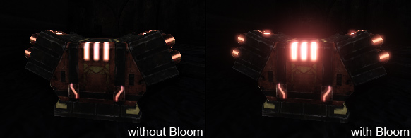
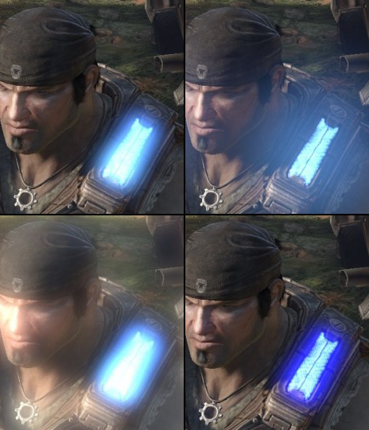
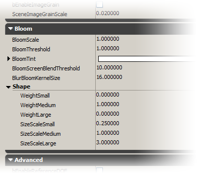
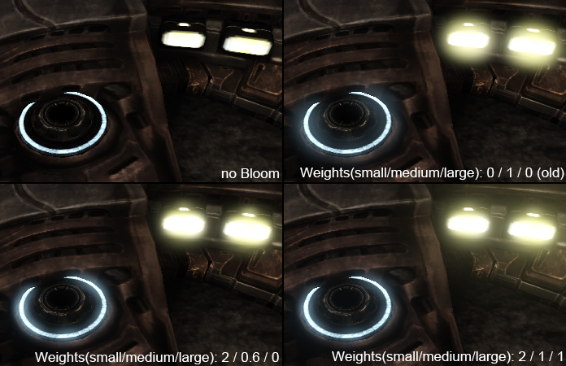
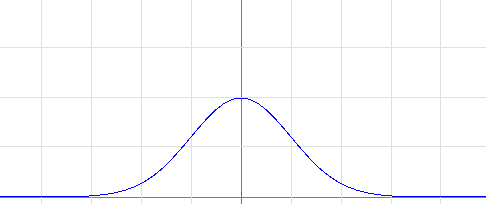
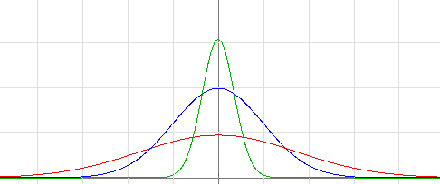
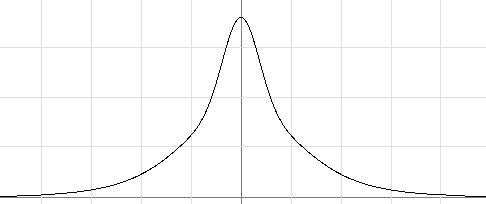
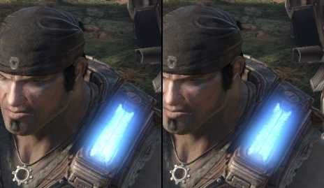

Bloom Post Process Effect

Overview
Bloom is a real world light phenomena that greatly can add to the perceived realism of a rendered image at a moderate render performance cost. Bloom can be seen by the naked eye when looking at very bright objects that are on a much darker background. Even brighter objects also cause other effects (streaks, lens flares) but those are not covered by the classic bloom effect. Because our displays (e.g. TV, TFT, ...) usually don't support HDR (high dynamic range) we cannot really render very bright objects. Instead we simulate the effects that happen in the eye (retina subsurface scattering), when light hits the film (film subsurface scattering) or in front of the the camera (milky glass filter). The effect might not always be physically correct but it can help to hint the relative brightness of objects or add realism to the LDR (low dynamic range) image.
Bloom properties
The properties to tweak the bloom can be found in the post processing chain in the UberPostProcessEffect node.
Note: Bloom properties can be found in other nodes as well (e.g. DOFAndBloomEffect) but those nodes should not be used, they only exists for backwards compatibility (might run less optimized code, reduced feature set).
Most of the properties there can also be found in the PostProcessVolumes, WorldProperties, CameraActor and some UnrealScript accessible structures. Those settings follows the usual override behavior like all other post process effects.
The following image shows the same content with differently tweaked properties:
|  |
left top: Default bloom settings
right top: Larger KernelSize
left bottom: Smaller Threshold
right bottom: With a blue Tint |
This is where the properties are exposed in the editor (chain):

Note that most levels have override the main settings in the PostProcessVolumes or in WorldPoperties.
Adjusting the bloom shape
Bloom is often implemented by using a separable Gaussian blur kernel. This allows efficient blurring (linear performance to the kernel radius, although the effect extend gains size in width and height).
Using the Gaussian blur and additively blending the result with the source results is not exactly the effect we want to see. It's good enough for a first approximation (many games shipped with that) but when raising the quality bar the bloom should be more detailed nearby the bright parts and should have a wider falloff. To accomplish that we can optionally add another one or two Gaussians contributions. The radius and weight of the three Gaussian curves can be tweaked in the UberPostProcessEffect node. The following image shows how this looks like when applied to game content:
|  |
left top: Without bloom the brightness of the object is not shown well.
right top: A single Gaussian Works well for the left object but not so well for the right one.
left bottom: Using two Gaussians works well on both objects.
right bottom: Using three Gaussians also adds a subtle nice large scale glow. |
The following image shows how a Gaussian distribution curve looks like:
|  |
| The graph shows a limited width Gaussian distribution curve. |
Three Gaussian curves with different scale and size can be combined:
|  |
red: large Gaussian curve
blue: medium Gaussian curve
green: small Gaussian curve |
By adding the contributions we get the shape we would like to see:
|  |
| The new shape is sharp in the center and more wide over distance. |
The shape can be tweaked in the editor (see "Shape" section in the editor image above) or by using the console commands (see bottom of the page).
Blurring in lower resolution
Bloom can be done in lower resolution without scarifying too much quality. We have good experience with quarter resolution (1/16 the area). The separable Gaussian blur allows large radius but at some point even that becomes too costly. Here we can do the computation in even lower resolution and save render performance.
For backwards compatibility we currently have a single Gaussian by default (weights: 0/1/0). Once the user specifies some amount of weight for small or large a different system is used. The new system does the medium Gaussian in half the resolution (this means it can result in a speedup but also quality reduction). The small Gaussian however is done in the normal bloom resolution. The large Gaussian is done in half the resolution of the medium one. This allows very large radius at very low cost.
Tonemapper interaction
Bloom is added to the scene before tone mapping for best quality. This means bright areas that are further brightened up by nearby areas blooming are softly converging to the LDR maximum (Usually this means white but for vibrant colors it can be a different color). If bloom has negative effect to the details in such bright areas the ScreenBlendThreshold property should be tweaked.
|  |
| Notice the small difference in the very bright area. |
Performance and implementation details
As we use the separable Gaussian blur method we have a performance cost almost linear scaling with the radius. The radius also scales with the screen resolution (more exactly view width) and the KernelSize is defined in pixels for a 1280 resolution. We limited the kernel size to 64 (Performance reasons and to have less shaders variations). Because of the lower resolution we can do that with only 16 lookups in the pixel shader (radius 64 -> width 128 -> 32 in quarter resolution, 16 bilinear filtered samples). If multiple Gaussians are used the medium one is half the resolution and the large one is quarter resolution. This affects quality and performance. The resulting images are currently combined with extra passes.(can be improved).
To out experience we see performance improvements over the old/default method (one Gaussian) only with large radius (64+).
Useful console commands
-
BloomScale - To adjust the strength of the bloom
-
BloomSize - To adjust the size of bloom effect
-
BloomType - To adjust the method that is used internally
-
BloomWeightSmall - To adjust the weight of the smaller Gaussian blur (after normalization, not like the UI property)
-
BloomWeightLarge - To adjust the weight of the larger Gaussian blur (after normalization, not like the UI property)
Mobile Support
On mobile platforms, bloom only works if enabled in System Settings. It is a high-end mobile feature, and can be quite expensive, so it should only be enabled with care. Mobile bloom settings can be set under DefaultPostProcessSettings, under the MobilePostProcess heading. Note that you must override at least one of Bloom_Scale, Bloom_Threshold, or Bloom_Tint under MobilePostProcess for bloom to actually be enabled. Also, note that when specifying these values in the WorldInfo, they will be used when bloom is enabled, even if the value is not overridden in the Property list.
Important!
You are viewing documentation for the Unreal Development Kit (UDK).
If you are looking for the Unreal Engine 4 documentation, please visit the Unreal Engine 4 Documentation site.